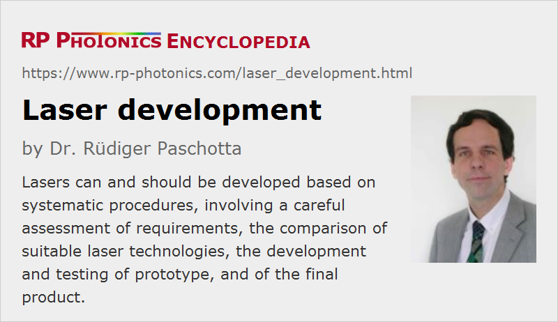

Laser Development
Definition: the process of developing a laser device
German: Laserentwicklung
How to cite the article; suggest additional literature
Author: Dr. Rüdiger Paschotta
This article discusses the process of developing laser devices. It does not focus on any particular technical details, but rather addresses the more general issue of arranging an efficient development process.
Many aspects apply in very similar form to other types of photonic devices, such as parametric oscillators.
A well-designed laser development process is particularly important for industrial lasers. For scientific lasers, one may encounter more challenging performance requirements, while the requirements in various other respects may be more relaxed. For example, highest reliability is generally required for industrial laser applications.
A Systematic Procedure for Laser Development
Non-systematic approaches to laser development can fail for many reasons. A systematic procedure as described in the following can be much more efficient concerning time and resources:
Assessment of Requirements
The first step is a careful assessment of what exactly is required. It is essential to realize all requirements at this stage, because it can be much more costly to introduce additional properties of the laser at a later stage.
As an example, one may consider a pulsed laser for an application where the precise pulse timing is critical. If that requirement is overlooked in the beginning, one may in the worst case choose a technological approach which makes it very hard to achieve the required timing accuracy. One may then be forced to either implement costly additional measures or to change the technological approach at a later stage.
Suitability of Technology
The second step is to check whether the envisaged technology is overall appropriate, and perhaps to compare the chosen approach with competing options. This step is essential, because mistakes made at this stage would affect the whole development process. An experienced laser engineer is therefore strictly required.
As an example, there are many cases where a certain laser could either be realized as a bulk laser or as a fiber laser. Both technologies have specific advantages and limitations, the relevance of which strongly depends on the concrete case.
Working out a Prototype Design
The next step is to work out a detailed laser design which can be used for building a prototype. This process involves quantitative checks of various issues before any laboratory work is started.
For example, if a passively mode-locked bulk laser is developed, this process can include calculations (not necessarily detailed modeling) concerning the pump intensity and laser gain (at different wavelengths), the threshold pump power, the balance of chromatic dispersion and nonlinearity in the resonator, the expected alignment sensitivity, the required modulation depth of the SESAM, the overall operation point of the SESAM concerning degree of saturation, the strength of pulse shaping, etc.
Such calculations go well beyond what could be done with a simple calculator; one will usually require a laser modeling software. With such a tool, various problems can be identified at the very early stage, then enforcing design changes until one obtains a design which is free of a number of foreseeable problems.
The “deliverable” of this design phase is a clearly written design report, containing not only all the parameters of the suggested prototype but also a clear description of the reasoning behind the design and possibly the likely limitations, some warnings, the list of required parts, etc.
Building and Testing the Prototype
Once the valve worked out prototype design exists, the required parts can be ordered and the prototype can be built, following the detailed prescriptions in the laser design. Obviously, it would be inefficient to start that phase without a proper prototype design, e.g. because one may then need to order additional components during the laboratory testing phase (causing additional cost and delays), and because various types of problems would be more difficult and costly to identify and solve.
The prototype may still exhibit some unforeseen problems – depending of course on the level of care and experience applied in the design phase. The design than his to be revised accordingly after identifying the origins of problems and suitable solutions for them.
Optimizing a design with further changes based on experimental tests in a trial & error procedure is often very time-consuming. For example, rearranging a laser setup often requires a complete realignment, and the same applies to rebuilding the original design if change turns out to be detrimental. Furthermore, the experimental results are often not conclusive or even misleading, since measured performance values can be affected by poorly controlled influences such as non-ideal alignment, dirty components or temperature changes. For such reasons, the effects of possible design changes can be much more efficiently and reliably evaluated with a suitable laser design software on a computer.
Finalizing a Product Design
For various reasons, further steps often have to be taken to turn the prototype design into a final product design:
- Sometimes, the performance requirements change during the development phase, or additional requirements are discovered only then.
- One may discover that some tolerances (e.g. concerning misalignment) are still too strict for the final product.
- Generally, and industrial laser design must be subject to stricter requirements than a prototype, e.g. concerning aspects like efficient production, sufficient robustness for practical applications until harsh conditions, and overall convenient for the customers.
- One may want to minimize the production cost by working with fewer or cheaper components.
Again, one will have to evaluate the detailed effects of various design changes, which is often more time-consuming and less conclusive when done with experimental tests rather than using a laser model.
User Manual
Other than the design document, the user manual can be written after all the prototype testing and refinement. Here, it is an advantage already to have all the practical experience with the device. It is important, however, that the author of a laser manual is able to fully recognize the needs of the end users, who have a less detailed knowledge of the technical details of the device. For laser engineer, this aspect can be somewhat challenging; it can then be very advantageous to have amenable checked by people who are not as closely familiar with the details.
Advantages of a Structured Development Strategy
The advantages of this structured approach are manifold:
- Most importantly, the costly and time-consuming laboratory work can be done in the most efficient way. Compared with a trial-and-error approach in the laboratory, it is easier to identify problems, their causes and suitable solutions on paper and/or with a computer, because this process is not limited by, e.g., available diagnostics, access to inner parts of the device, or available alternative optical components.
- As another consequence, the laser product can enter the market sooner, thus generating revenue at an earlier time and positioning the company in the market.
- The well-documented laser design helps the development team to learn more about the technical details, and is a very useful input for any further development – even if that is carried out by other personnel.
- Another advantage of a well-planned development process is that fewer parts are ordered which are not used in the end.
A frequent mistake is to consider the laser design document as a side product of the development process, rather than as its basis. This easily leads to inefficient iterative steps in the laboratory, which can consume much more time and resources than the process of working out a detailed design in an earlier phase.
Suppliers
The RP Photonics Buyer's Guide contains 21 suppliers for laser development services. Among them:
Questions and Comments from Users
Here you can submit questions and comments. As far as they get accepted by the author, they will appear above this paragraph together with the author’s answer. The author will decide on acceptance based on certain criteria. Essentially, the issue must be of sufficiently broad interest.
Please do not enter personal data here; we would otherwise delete it soon. (See also our privacy declaration.) If you wish to receive personal feedback or consultancy from the author, please contact him e.g. via e-mail.
By submitting the information, you give your consent to the potential publication of your inputs on our website according to our rules. (If you later retract your consent, we will delete those inputs.) As your inputs are first reviewed by the author, they may be published with some delay.
See also: laser design, industrial lasers, scientific lasers, The Photonics Spotlight 2006-07-05, The Photonics Spotlight 2006-12-09, The Photonics Spotlight 2007-03-16, The Photonics Spotlight 2007-11-26, The Photonics Spotlight 2008-02-14, The Photonics Spotlight 2009-06-29, The Photonics Spotlight 2010-07-12
and other articles in the categories lasers, methods

This encyclopedia is authored by Dr. Rüdiger Paschotta, the founder and executive of RP Photonics Consulting GmbH. How about a tailored training course from this distinguished expert at your location? Contact RP Photonics to find out how his technical consulting services (e.g. product designs, problem solving, independent evaluations, training) and software could become very valuable for your business!
|  |
If you like this page, please share the link with your friends and colleagues, e.g. via social media:
These sharing buttons are implemented in a privacy-friendly way!